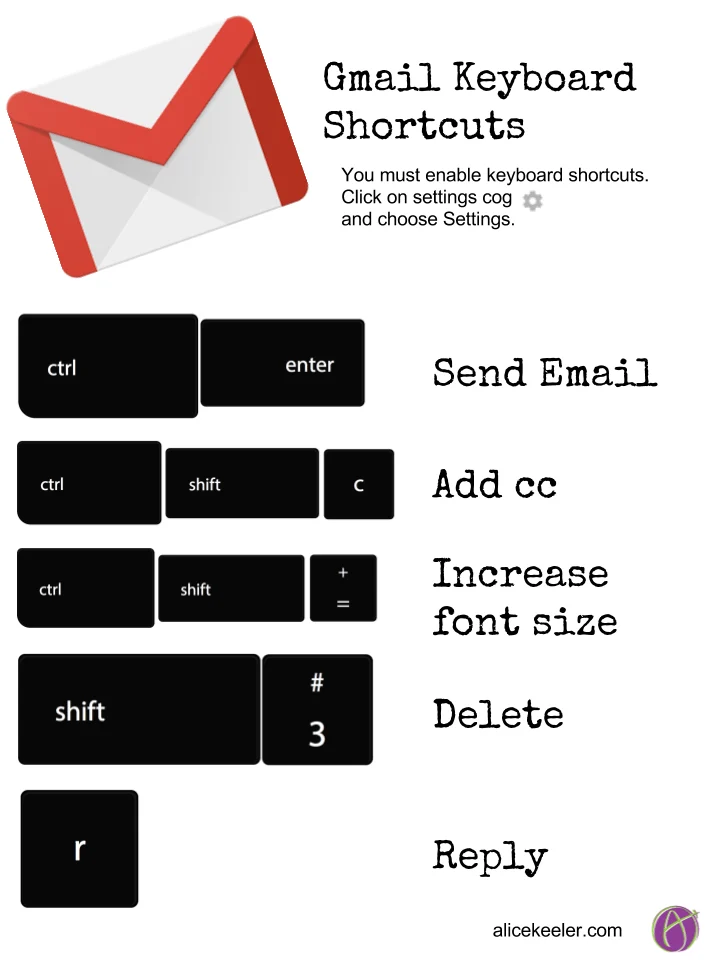

Oryginalna treść i tłumaczenie
EN: Shortcuts — hidden from novice users — may speed up the interaction for expert users.
PL: Skróty, niewidoczne dla początkujących użytkowników, mogą przyspieszać pracę użytkowników zaawansowanych.
Przykład ze strony internetowej

Źródło: Alice Keeler – Gmail shortcuts infographic
Przykład z aplikacji mobilnej
Źródło: MakeUseOf – iPhone gestures